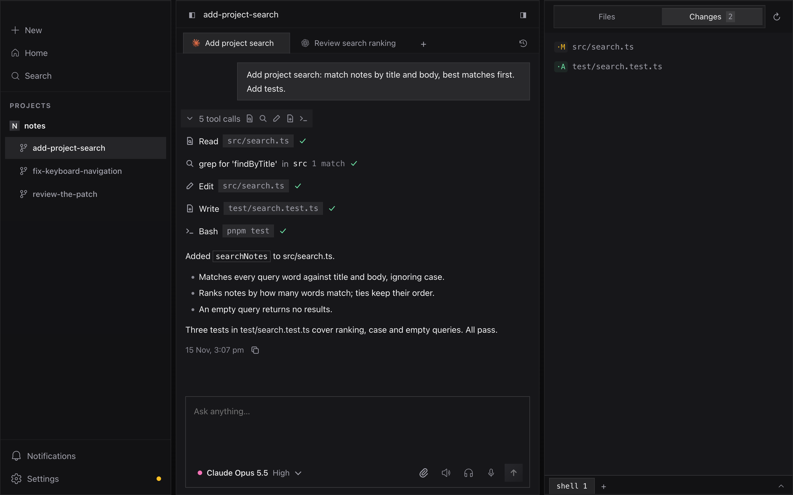
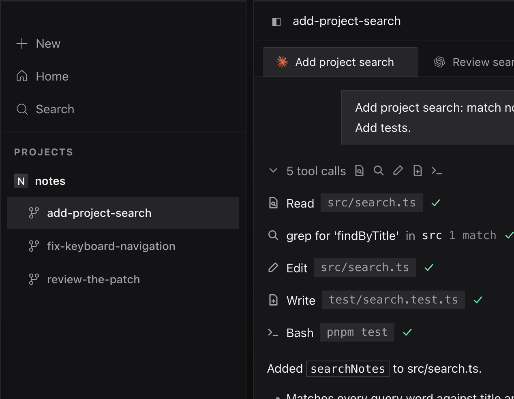
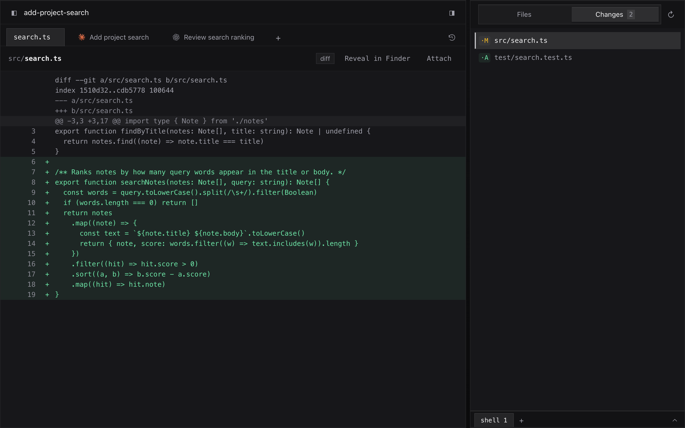
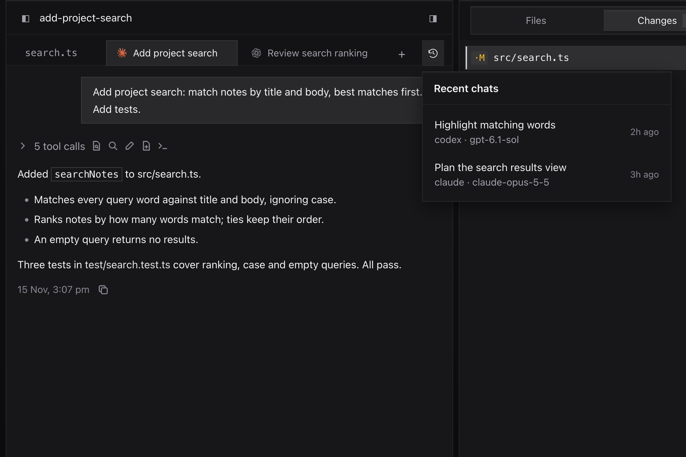

Your coding agents.
One place to build.
Run Claude and Codex in separate workspaces, follow each task, and review changes without losing context.
For Apple Silicon Macs

02
Give each task its own workspace.
Every workspace is a fresh git worktree on its own branch, with up to five agent conversations inside it.

03
See what changed.
Read each change and browse the project files without leaving LoomBox.

04
Pick up where you left off.
Conversations stay with the workspace they belong to, and past sessions are searchable.

05 · draft answers
Practical answers.
- Which Macs does LoomBox run on?
- Apple Silicon Macs. The minimum macOS version is still to be confirmed.
- Which agents can I use?
- Claude and Codex through their own command-line tools. Gemini and Qwen work with an API key stored in your macOS Keychain.
- Do I need new subscriptions?
- No. Claude and Codex sign in with the plans you already have.
- Where does my work run?
- On your Mac. Each workspace is a git worktree of your own repository.
- Do I need an organization?
- No. Organizations can add cloud workspaces on a host they run, but local work needs no LoomBox account.
06
Bring your next task into LoomBox.
v0.1.0 · Apple Silicon · macOS version to be confirmed